This directory contains samples related to the Rogue Wave Views Charts package
| Displaying a Cartesian Chart | |
| 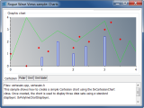 | Creation of a simple Cartesian chart with several displayers. |
| Displaying a Polar Chart | |
| 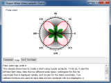 | Creation of a simple polar chart with several displayers. |
| Displaying a Chart from XML Data | |
| 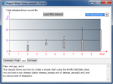 | Creation of a simple Cartesian chart out of an XML data file. |
| Displaying a Chart from XML Data defining dates | |
| 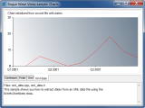 | Creation of a Cartesian chart out of an XML data file defining dates. |
| Displaying a Chart with Logarithmic Scales | |
| 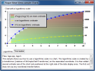 | Creation of a chart using a logarithmic scale. |
| Displaying a Chart With Two Ordinate Scales | |
| 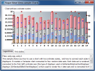 | Creation of a chart with two ordinate scales. |
| Displaying a Cartesian Chart Using the Automatic Shift Scroll | |
| 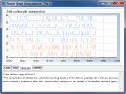 | Demonstration of the automatic shift scroll mode of the charts. |
| Displaying a Polar Chart Using the Automatic Shift Scroll | |
| 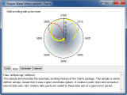 | Demonstration of the automatic shift scroll mode of the charts. |
| Displaying a Chart Using the Automatic Cycle Scroll | |
| 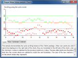 | Demonstration of the automatic cycle scroll mode of the charts. |
| Using Data Sets Listeners in Charts | |
| 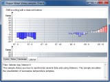 | Synchronization of several data sets using listeners. |
| Displaying a Bubble Chart | |
| 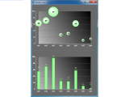 | Shows how to use a bubble displayer. |
| Example of a Radar Chart | |
| 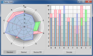 | Shows you how to create a Radar Chart. |
| Using Filter to Display Huge Data Sets | |
| 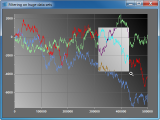 | Shows how to use a predefined filter to display a large number of points. |
| Using Interactors to Interact with Charts | |
| 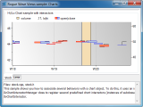 | Association of different behaviors with a chart. |
| Local Zoom in Charts | |
| 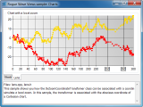 | Shows how to set a local zoom on a coordinate. |
| Displaying a Chart with Stacked Ordinate Scales | |
| 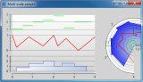 | Creation of a chart with several stacked scales for the ordinate. |
| Displaying Pie Charts | |
| 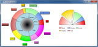 | Creation of pie charts. |
{kind=link}
{kind=link}
{kind=link}
{kind=link}
{kind=link}
{kind=link}
{kind=link}
{kind=link}
{kind=link}
{kind=link}
{kind=link}
{kind=link}
{kind=link}
{kind=link}
{kind=link}
{kind=link}
{kind=link}